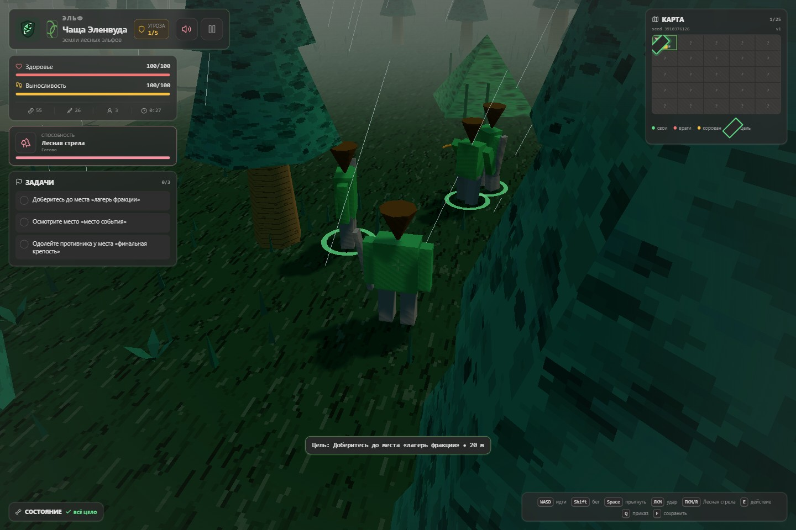
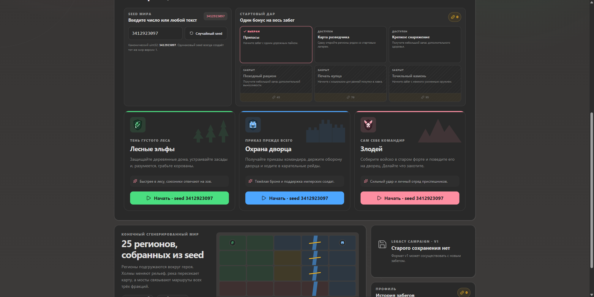

Первая версия «КОРОВАНОВ» уже исполняла главное обещание легендарного геймдизайнерского мема. Можно было выбрать лесных эльфов, дворцовую охрану или злодея, собрать союзников, торговать, получать травмы, ставить протезы и, конечно, грабить корованы.
Сейчас всё это происходит не на одной выученной карте, а внутри отдельного путешествия. Игра придумывает географию, прячет дорогу под туманом войны, выдаёт каждой стороне свой маршрут, помнит спасённых спутников и подстраивает музыку под место и опасность.
В результате знакомая шутка стала машиной для небольших приключений. Один забег запоминается мостом через опасную реку, другой снежной дракой у форта, а третий тем, что ваш лучник опять отстал ровно тогда, когда он был нужнее всего.
Корован всё ещё надо грабить. Просто теперь до него сначала нужно дожить, добраться через незнакомый мир и не растерять отряд по дороге.
Когда весь мир умещался в четырёх клетках
В начале деревня, дворец, эльфийский лес и форт образовывали один бесшовный мир. Каждая фракция начинала в своём углу, получала три задания и постепенно знакомилась со всеми местными дорогами, торговцами и неприятностями.

Эта основа никуда не делась. Новая версия оставила тот же простой выбор стороны, понятное управление и абсурдно серьёзное отношение к потере конечностей. Всё добавленное дальше отвечает на один вопрос: сколько разных историй можно построить вокруг этой идеи?
Теперь дорога сама не знает, куда ведёт
Перед началом можно ввести любое число или текст: памятную дату, кличку коня или
слово korovany. Сид превращается в карту 5×5 с холмами, биомами,
территориями фракций, поселениями, дорогами, рекой и мостами. У каждой стороны будет
собственная точка старта, цепочка целей и финальная крепость.
Одинаковый сид всегда создаёт одинаковый мир. Можно поделиться с другом особенно удачной кампанией или особенно проклятым мостом и сравнить, кто первым доберётся до финала. При этом эльфы, охрана и злодей проходят одну географию по-разному.

Кампания открывается вокруг героя по мере путешествия. Мини-карта начинает с одной известной клетки из 25, соседние земли выходят из тумана войны, а покинутые регионы помнят последствия вашего визита. Новый сид означает не перестановку врагов, а новый маршрут через целый конечный мир.
У похода появились погода, время и характер
Земля теперь покрыта процедурными пиксельными узорами, леса собираются из объёмных деревьев, у дорог есть колеи, у воды течение, а под ногами растут трава, папоротники, цветы и камни. Разные биомы читаются не только по цвету, но и по силуэтам, материалам и плотности растительности.
День сменяется ночью, солнце уступает место луне и звёздам, факелы становятся полезнее после заката. В лесу начинается дождь, у форта летит снег, облачность приглушает свет, а ветер качает траву. Если хочется более спокойной картинки, погоду, время суток, свечение, контуры и растительность можно настроить отдельно.

Каждая драка теперь рассказывает историю
У каждой фракции появился свой активный приём, а враги перестали обмениваться с героем одинаковыми взмахами. Сильные атаки заметно готовятся, после удара нужно восстановиться, тяжёлого противника сложнее оглушить, а хороший выпад может отбросить цель и открыть пространство для следующего движения.
Мир регулярно подбрасывает события: спасение пленника, охоту за головой, оборону, встречу с чемпионом или богатый корован. Чем дольше длится поход, тем выше угроза, крепче враги и чаще налёты. Заработанное золото уходит на повторяемые улучшения, а значит даже случайная стычка остаётся полезной по дороге к финальной крепости.
Toon-шейдинг и чернильные контуры помогают читать толпу. Вспышки, линии скорости, слова ударов и короткие акценты камеры делают попадания сочнее, а цвет редкости, выброс предметов и карточка награды превращают добычу в маленький праздник. Всё это можно приглушить, но иногда приятно, когда игра буквально пишет: «БАБАХ».
Раньше победа означала, что враг упал. Теперь она ещё звенит, вспыхивает, разбрасывает добычу и заставляет отряд бежать к следующей неприятности.
В одиночку идти можно. Но зачем?
Каждый новый поход начинается с трёх спутников. Эльфы берут двух разведчиков и лучника, охрана двух солдат и лучника, а злодей отправляется в путь с приспешником, громилой и стрелком. Состав сразу подчёркивает стиль фракции и даёт ощущение маленькой экспедиции, а не одинокой прогулки по лесу.
Приказ по Q собирает союзников рядом. Если кто-то отстал, он ускоряется,
а перед новой дракой старается сначала вернуться к герою. Спасённые пленники тоже
могут присоединиться. Здоровье, роль и положение спутников сохраняются вместе с
походом, поэтому у отряда появляется собственная история.
Даже неудачный поход оставляет след
Активный забег можно приостановить и продолжить позже. Победы, поражения и добровольно брошенные походы попадают в историю, а постоянный профиль зарабатывает валюту для стартовых даров. Один дар открывает соседние земли, другой добавляет припасы, третий помогает начать путь крепче и увереннее.

Достижения следят за тем, что действительно происходит: кого вы победили, что купили, сколько корованов ограбили, какие травмы пережили и какой фракцией дошли до финала. Есть пять уровней редкости и скрытые условия. Усиление за них не выдают, зато право хвастаться сохраняется между всеми кампаниями.
У трёх сторон появились лица
Лист лесных эльфов, крепость дворцовой охраны и череп злодея теперь встречают игрока ещё в меню. Эмблемы сопровождают фракцию на карте, в активном походе и в истории, а панорама с лесом, корованом, лагерем и дворцом собирает весь конфликт в одну картинку.

Все изображения созданы специально для игры и продолжают её угловатый, немного игрушечный стиль. Теперь сторону конфликта можно узнать одним взглядом, ещё до того как прочитано её название.
Саундтрек слышит, что вы натворили
У каждой фракции есть собственная тема с отдельным темпом, мелодией и набором синтезированных инструментов. Лес, нейтральные земли, дворец и форт меняют её оттенок, а сид добавляет воспроизводимые вариации. Даже музыка принадлежит именно выбранному миру.
Спокойное исследование звучит просторно. Замеченный враг добавляет напряжение, бой уплотняет бас и ударные, а чемпион выводит тему на максимум. Переходы случаются на границе такта, поэтому длинная композиция развивается вместе со сценой, а не обрывается ради другого файла.
- Спокойный мирИсследование
- Враг рядомТревога
- Есть контактБой
- Особая цельЧемпион
Саундтрек не выбирает один из четырёх коротких треков, а добавляет и снимает слои одной композиции длиной больше минуты. Чем выше общая угроза кампании, тем настойчивее ритм. И всё это звучит без записанных песен и внешних звуковых наборов.
Музыка знает, кто вы, где вы, насколько далеко зашли и кто прямо сейчас пытается вас убить. Для похода про корованы это почти неприлично внимательный оркестр.
Что получает игрок теперь
Если собрать все изменения в короткую походную ведомость, разница выглядит так:
| Что сравниваем | Первая версия | Сейчас |
|---|---|---|
| Карта похода | 4 связанные земли | 25 сгенерированных регионов |
| Начало кампании | Выбор фракции | Фракция, сид и стартовый дар |
| Атмосфера | Постоянное время суток | День, ночь, дождь, снег и ветер |
| Между походами | Одно локальное сохранение | Профиль, история, дары и 58 достижений |
| Музыка | 8-битные вариации фракций | Реакция на место, угрозу и бой |
| Фракционный образ | Цвет и название | Эмблемы, панорама и оформление похода |
Главное изменение не помещается в одну строку: теперь после похода остаётся история, которую можно пересказать. Где прошла река, кого удалось спасти, какой спутник дожил до финала, в какую погоду встретился чемпион и какой сид больше никогда не стоит запускать без крепкого снаряжения.
А корованы всё ещё здесь
Главное обещание осталось прежним. Нужно выбрать лесных эльфов, дворцовую охрану или злодея; отправиться через странный low-poly мир; драться, торговать, командовать отрядом, терять части тела, заменять их сомнительными механизмами и в конце концов что-нибудь сделать с корованом.
Только теперь дорога к этой сомнительной цели каждый раз другая. Новый сид даёт новую карту, новый состав неприятностей и новый повод крикнуть отряду: «Куда вы опять делись?» Именно поэтому к шутке хочется вернуться ещё раз.
Играть в «КОРОВАНЫ»